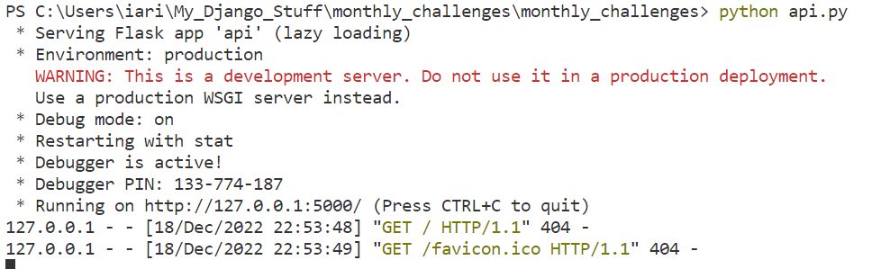
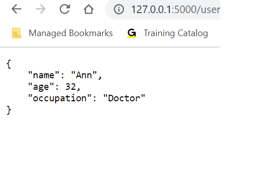

The focus of unit 5 was future trends in secure
software development by examining technologies such as fog computing,
IoT and cyber physical systems. I was particularly interested in the
concept of fog computing as I had not encountered it before during my
career.
Question 1
Run the API.py code. Take a screenshot of the terminal output. What command did you use to run the code?

Question 2
Run the following command at the terminal prompt: w3m http://127.0.0.1:5000/user/Ann
What happens when this command is run, and why?

User Ann is retrieved as it exists in users
Question 3
Run the following command at the terminal prompt: w3m http://127.0.0.1:5000/user/Adam
What happens when this command is run, and why?
User is not found as he is not included in the list of users
Question 4
What capability is achieved by the flask library?
The flask library is used to create a back server for handling rest api requests
Future Trends Activity
Based on your reading this week, could you write a section that might be appended to this paper, Salah et al, 2016, which would present the next phase of evolution history, from microservices to the technologies which are commonly in use today?
It is without doubt that microservices is an evolving trend which on a large scale replaces monolithic architectures. Of course monolithic architectures might not be replaced completely as they are still a practical and efficient architectural layout for small applications or systems and also prefered sometimes in smaller organisations who do not have the technical understanding or confidence to work with developing microservices applications for small projects. Potential future trends in microservices could be an evolution towards a multi-runtime architecture and perhaps a move towards miniservices or what people term hybrid microservices.